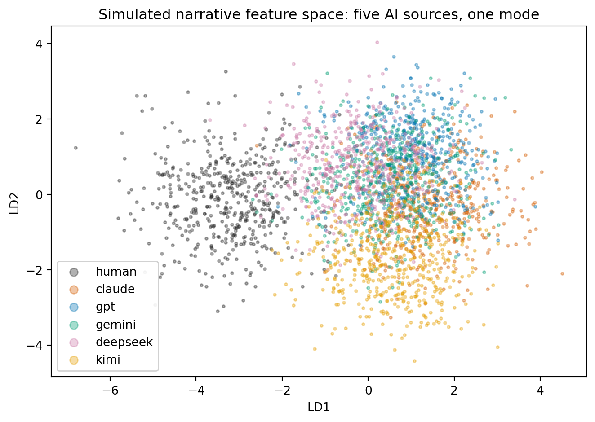

Human intuitions are systematically bad at predicting how large language models (LLMs) generalize to new queries, even when we show people rich performance data.
LLMs exhibit structured “brittleness”: small, seemingly irrelevant changes in inputs or prompts can produce large, hard-to-predict output changes.
Algorithms can succeed on many sequence tasks while holding deeply wrong “world models,” so high benchmark scores do not guarantee correct internal representations.
Independently trained frontier models converge on a shared, narrow region of choice space that is measurably displaced from human behavior, so the diversity of a model’s outputs is its own axis of evaluation, separate from their per-example quality.
Taken together, these results force us to rethink both how we evaluate LLMs and how we mentally model what they are doing.
221.1 Human expectations and the “generalization function”
221.1.1 From accuracy numbers to mental models
Suppose I show you an LLM that answers 80 percent of U.S. history questions correctly, 90 percent of programming problems, but only 30 percent of moral-dilemma questions. You are then asked: “How well will it do on factual questions about international law?” or “How well will it write a proof sketch for a functional analysis theorem?”
Most people have strong intuitions here. They form an implicit judgment about:
what “kind” of task each benchmark represents,
how similar the new task is to the ones they saw, and
how “capable” the model is overall.
The central insight of Vafa, Rambachan, and Mullainathan (2024) is that this process is structured enough that we can model it as a human generalization function and learn it from data. They show that:
People are surprisingly consistent across individuals in how they generalize from observed to unobserved tasks.
This human generalization function can itself be predicted by a separate NLP model.
LLMs often violate the patterns people expect: they perform better than expected on some tasks and worse on others in ways that defy human intuition.
A complementary line of work in behavioral economics and psychology finds that people systematically overestimate the alignment between their own beliefs and model behavior. He documents a pattern of “anthropomorphic projection”: people predict that a generative model will make choices closer to their own than it actually does (He, Shorrer, and Xia 2025). This effect persists even for technically sophisticated subjects and across a variety of domains.
MIT News’ coverage of this research captures the tension succinctly: people often behave as if “LLMs are like people,” yet careful experiments show that LLMs do not in fact behave like people and do not generalize along the same dimensions that humans do.
221.1.2 Formalizing the human generalization function
Let there be \(T\) tasks. For each task \(t \in {1,\dots,T}\), define:
True LLM accuracy: \(a_t \in [0,1]\).
Features \(x_t\) describing the task (topic, format, required skills, etc.).
Now imagine that we show a human an observed subset of results \(O \subset {1,\dots,T}\). The human sees \({(x_t, a_t)}_{t \in O}\) and is then asked to predict model accuracy on some unobserved task \(u \notin O\).
where \(g\) is the human generalization function: it takes in the tasks and accuracies they have seen and outputs beliefs about a new task. Vafa, Rambachan, and Mullainathan (2024) show:
There is a stable mapping from a vector representation of the task and observed performance to these predictions.
A separate model (for example a BERT-like encoder) can approximate \(g\) well using standard supervised learning.
This gives us two distributions to compare:
The true LLM performance vector \(a = (a_1,\dots,a_T)\).
The human-expected performance vector \(\hat{a}^{(h)} = (\hat{a}_1^{(h)},\dots,\hat{a}_T^{(h)})\) for human \(h\), or its average across humans.
A key empirical finding is that the distance \(d(a, \hat{a}^{(h)})\), for example in \(L_2\) norm, can be very large even when people have seen quite informative performance summaries. People systematically mis-predict which tasks will be easy or hard for a model, and they tend to smooth over sharp discontinuities that LLMs exhibit across question formats and topics.
This mismatch matters for deployment. If the human generalization function badly approximates the actual model, then people will allocate trust and attention in pathological ways, over-relying on LLMs in fragile regions and under-using them where they would in fact perform well.
221.1.3 Practical framework: modeling human expectations in Python
In research and engineering practice, it is useful to build a small pipeline that:
Stores observed LLM performance on a suite of tasks.
Stores human predictions about performance on those tasks, given partial observations.
Fits a predictive model for human expectations.
Quantifies mismatch between expectations and ground truth.
Below is a minimal but scalable implementation sketch, designed to work with either synthetic data or a real dataset similar in spirit to that of Vafa, Rambachan, and Mullainathan (2024)
221.1.3.1 Data model
Assume we have a table with columns:
worker_id: human identifier
task_id: task identifier
task_features: vector representation (for example, a sentence embedding)
observed_summary: embedding of the performance summary the human has seen
true_accuracy: true LLM accuracy on the task
predicted_accuracy: human prediction
We will use Polars for efficient tabular work and scikit-learn for modeling.
Code
import polars as plimport numpy as npfrom sklearn.model_selection import train_test_splitfrom sklearn.linear_model import Ridgefrom sklearn.metrics import mean_squared_errorfrom sklearn.preprocessing import StandardScalerfrom sklearn.pipeline import make_pipeline# Load data (could be parquet or csv)df = pl.read_parquet("human_llm_generalization.parquet")# Suppose embeddings are stored as lists of floatsdef to_numpy(mat_col: pl.Series) -> np.ndarray:return np.vstack(mat_col.to_list())X_task = to_numpy(df["task_features"])X_summary = to_numpy(df["observed_summary"])# Concatenate task and summary representationsX = np.hstack([X_task, X_summary])y_true = df["true_accuracy"].to_numpy()y_human = df["predicted_accuracy"].to_numpy()# Split by workers if you want strict generalization across peopletrain_idx, test_idx = train_test_split( np.arange(len(df)), test_size=0.2, random_state=0)X_train, X_test = X[train_idx], X[test_idx]y_human_train, y_human_test = y_human[train_idx], y_human[test_idx]y_true_train, y_true_test = y_true[train_idx], y_true[test_idx]# Model the human generalization functionhuman_model = make_pipeline( StandardScaler(), Ridge(alpha=1.0))human_model.fit(X_train, y_human_train)pred_human_test = human_model.predict(X_test)rmse_human = mean_squared_error(y_human_test, pred_human_test, squared=False)print(f"RMSE of model predicting human expectations: {rmse_human:.3f}")# Compare human predictions to true accuracies on the same tasksrmse_expectation = mean_squared_error(y_true_test, y_human_test, squared=False)rmse_oracle = mean_squared_error(y_true_test, pred_human_test, squared=False)print(f"RMSE between human expectations and reality: {rmse_expectation:.3f}")print(f"RMSE if we could perfectly predict human expectations: {rmse_oracle:.3f}")
This code plays two distinct roles:
It evaluates how structured human expectations are. If the model predicts human predictions well, then human generalization is not random.
It quantifies the mismatch between human expectations and reality by comparing rmse_expectation to the intrinsic noise in human predictions.
In a real project you would replace Ridge with a more powerful architecture (for example a small transformer taking as input a natural-language summary of observed performance) and use confidence intervals or Bayesian models to capture uncertainty in human beliefs.
221.1.3.2 Interpretation
If we find that:
\(\text{RMSE}(\hat{a}^{(h)}, a)\) is large, but
\(\text{RMSE}(\tilde{a}, \hat{a}^{(h)})\) (where \(\tilde{a}\) is the model of human expectations) is small,
then we have evidence that the problem is not noise but systematic miscalibration. People share a common but wrong mental model of LLM capability. That mental model is learned, consistent, and thus can itself be studied, stress-tested, and perhaps corrected using tutorials or interface design.
221.2 Stylized examples and systematic evaluations of LLM brittleness
221.2.1 What is “brittleness”?
Informally, a model is brittle when small, intuitively irrelevant changes in input produce large, qualitatively different outputs or performance, even though ground truth labels are unchanged.
We can formalize this in the simplest classification setting. Let \(f : \mathcal{X} \to \mathcal{Y}\) be the model and \(y(x)\) the ground truth label. Define a family \(\mathcal{T}\) of semantics-preserving transformations on inputs, such as:
paraphrasing a question,
translating to another language and back,
reordering options in a multiple-choice question,
negating and adjusting polarity in a logically equivalent way.
We say that the model is brittle on input \(x\) if there exists a \(\tau \in \mathcal{T}\) with \(y(\tau(x)) = y(x)\) but \(f(\tau(x)) \ne f(x)\), or more generally if the predictive distribution shifts substantially:
A dataset-level brittleness measure is then the expectation of this quantity, or the probability that the arg max class changes under some allowed transformation.
A growing body of work builds precisely these sorts of transformations and measures brittleness across tasks:
Min et al. (2022) show that in-context learning accuracy barely changes when labels in demonstrations are randomly permuted, indicating that LLMs often ignore the intended semantics of example-label pairs and rely instead on superficial features such as format and label inventory
Khashabi et al. (2022) uncover “prompt waywardness,” where continuous prompt tuning finds prompt vectors that solve a task but decode to arbitrary or even misleading natural-language instructions
Guha et al. (2023) includes pairs of legally equivalent but differently worded questions to explicitly evaluate brittleness to readability and wording changes in legal reasoning
Mozes and follow-up work document adversarial brittleness of in-context learning, where innocuous-looking changes in few-shot examples can dramatically change behavior on held-out inputs (Mozes 2024). (UCL Discovery)
Recent evaluations of political worldviews in LLMs measure reliability under paraphrasing, negation, and translation, finding that model stances on the same underlying policy can flip with small prompt changes (Ceron et al. 2024). (arXiv)
Together with broader analyses of prompt engineering and in-context learning (Liu et al. 2023; Chen et al. 2025), these studies paint a picture of models that can appear stable on a specific benchmark but behave chaotically once we probe the local neighborhood of the input space.
221.2.2 2.2 Taxonomy of brittleness
For the purposes of implementation and measurement, it is helpful to distinguish several kinds of brittleness:
Lexical brittleness Sensitivity to synonym replacements, minor wording tweaks, or formatting changes (for example bullet list versus paragraph).
Structural brittleness Sensitivity to reordering of logically independent components, such as the order of options in a multiple choice list or the order of few-shot examples in a prompt.
Semantic brittleness Failures under logically equivalent paraphrases, such as negation with polarity flip or expressing the same policy stance with different rhetoric.
Contextual brittleness Sensitivity to seemingly irrelevant context additions: adding an unrelated sentence, or changing a user’s stated demographic, can alter answers that should be invariant.
State / world-model brittleness Models that act consistently under the exact training distribution but fail catastrophically when small changes alter the underlying environment (for instance closing a few roads in a navigation task). This overlaps with the world model discussion in section 3. (MIT News)
In practice, a good evaluation suite will try to measure all five.
221.2.3 2.3 A small brittleness benchmarking harness in Python
Here we will design a small framework to quantify brittleness for any LLM accessible through an API. The core idea:
Start from a dataset of base prompts and gold labels.
Generate transformed variants of each prompt using deterministic rules or another model.
Call the LLM on both base and transformed prompts.
Compute disagreement and accuracy changes.
We will focus on textual transformations such as paraphrasing and negation. For illustration, we will treat model calls as a black box function call_llm(prompt).
import polars as plfrom dataclasses import dataclassfrom typing import List, Callable, Dict, Any@dataclassclass Example: example_id: str prompt_base: str label: str@dataclassclass TransformedExample: example_id: str transform_name: str prompt_variant: str label: str# Step 1: load base datasetbase_df = pl.read_csv("policy_questions.csv") # columns: id, prompt, labelbase_examples = [ Example(row["id"], row["prompt"], row["label"])for row in base_df.iter_rows(named=True)]# Step 2: define a library of transformationsdef paraphrase_prompt(text: str) ->str:# In production, call a paraphrasing model; here we use a placeholderreturnf"Please answer the following question in your own words:\n{text}"def negate_policy_stance(text: str) ->str:# A toy example of flipping stance while preserving semantic corereturn text.replace("should", "should not")TRANSFORMS: Dict[str, Callable[[str], str]] = {"paraphrase": paraphrase_prompt,"negation_flip": negate_policy_stance,}# Step 3: generate transformed variantsdef generate_transformed(examples: List[Example]) -> List[TransformedExample]: transformed = []for ex in examples:for name, fn in TRANSFORMS.items(): prompt_variant = fn(ex.prompt_base) transformed.append( TransformedExample( example_id=ex.example_id, transform_name=name, prompt_variant=prompt_variant, label=ex.label, ) )return transformedtransformed_examples = generate_transformed(base_examples)# Step 4: define a thin wrapper around your LLM APIdef call_llm(prompt: str, temperature: float=0.0) ->str:""" Replace this stub with a real call to OpenAI, Anthropic, etc. It should return a short answer string that can be mapped to labels. """raiseNotImplementedErrordef get_model_label(raw_output: str) ->str:# For classification tasks, map the model text to a canonical label text = raw_output.strip().lower()if"support"in text or"yes"in text:return"support"if"oppose"in text or"no"in text:return"oppose"return"unknown"# Step 5: run the evaluation (this may take time in practice)records: List[Dict[str, Any]] = []for ex in base_examples: raw = call_llm(ex.prompt_base) pred_label = get_model_label(raw) records.append( {"example_id": ex.example_id,"transform_name": "base","pred_label": pred_label,"gold_label": ex.label, } )for ex in transformed_examples: raw = call_llm(ex.prompt_variant) pred_label = get_model_label(raw) records.append( {"example_id": ex.example_id,"transform_name": ex.transform_name,"pred_label": pred_label,"gold_label": ex.label, } )results = pl.from_dicts(records)# Step 6: compute brittleness metrics# Accuracy by conditionacc_df = ( results .with_columns( (pl.col("pred_label") == pl.col("gold_label")).alias("correct") ) .groupby("transform_name") .agg(pl.mean("correct").alias("accuracy")))print(acc_df)# Disagreement between base and transformed promptspivot = results.pivot( values="pred_label", index="example_id", columns="transform_name")for name in TRANSFORMS.keys(): col_base = pivot["base"] col_var = pivot[name] disagreement = (col_base != col_var).mean()print(f"Disagreement rate for {name}: {disagreement:.3f}")
In an applied setting, you would expand this into:
Multiple transformation families per taxonomy category.
A richer label mapping and calibration of generative outputs.
Confidence-aware metrics: not just whether the answer changes, but how much the log probability mass shifts.
The key point is that once you have this harness, you can treat “brittleness score” as a first-class evaluation metric alongside accuracy or BLEU, and compare models and prompting strategies accordingly.
221.3 3. Good performance with wrong world models
The final piece of the puzzle is the observation that models can perform very well on sequence tasks while representing the underlying world in a completely wrong way.
221.3.1 3.1 World models as equivalence classes over histories
Consider a deterministic environment (for example a board game or road network). At any time the environment is in some state (s S). There is an alphabet () of possible observations or actions, and a transition function
[ : S S.]
The environment induces a mapping from finite sequences of symbols (histories) to states. Two histories (h_1, h_2 ^) are Myhill, Nerode equivalent if, no matter what sequence of future moves (z ^) you append, the resulting labeled path is identical:
[ h_1 h_2 z ^:; (h_1 z) = (h_2 z).]
The equivalence classes of this relation correspond to the minimal states of a deterministic finite automaton (DFA) that exactly captures the environment. (arXiv)
A world model for this environment is any mapping (f) from histories to internal representations ((h)) such that:
If (h_1 h_2) (same true state) then ((h_1) = (h_2)) up to small perturbations.
If (h_1 h_2) (different true states) then ((h_1)) and ((h_2)) are appropriately separated.
Vafa et al. propose two families of metrics to evaluate whether a sequence model has learned such a world model (Vafa et al. 2024):
Sequence compression: how often does the model correctly merge histories that are equivalent in the true automaton?
Sequence distinction: how often does the model keep distinct histories that lead to different future possibilities?
They show empirically that transformers trained to high predictive accuracy on tasks like New York City navigation and Othello can heavily fail these world-model metrics, especially under small environment changes such as closing a fraction of streets or adding detours. (MIT News)
Subsequent work extends this perspective to pretrained learners and foundation models, emphasizing that even when an LLM transfers well to new tasks, the underlying inductive bias may capture only a crude or partial state representation (Vafa et al. 2025). (OpenReview)
At the same time, mechanistic interpretability studies on “Othello-GPT” and related models demonstrate cases where relatively small transformers do learn remarkably linear internal encodings of world state, at least for simplified games (Nanda, Lee, and Wattenberg 2023; Hazineh, Zhang, and Chiu 2023). (Neel Nanda)
Taken together, we are left with a nuanced picture: some sequence models learn elegant world models in toy domains, while large, production-scale LLMs can achieve high prediction accuracy in complex domains without forming coherent, robust state representations.
221.3.2 3.2 A toy experiment: training a sequence model on a DFA
To ground these ideas, we will build a small experiment where:
We define a random DFA with a small number of states.
We generate training sequences by starting from an initial state and following random transitions.
We train a GRU-based model to predict the next symbol.
We inspect the model’s hidden states to estimate whether it has recovered the underlying DFA states.
This is only a sketch compared to the full Myhill, Nerode-based metrics, but it illustrates the central possibility: the model may achieve very low prediction error while failing to align its hidden states with the true automaton states.
import torchimport torch.nn as nnfrom torch.utils.data import Dataset, DataLoaderimport numpy as npfrom sklearn.cluster import KMeansfrom sklearn.metrics import adjusted_rand_score# 1. Build a random DFAclass RandomDFA:def__init__(self, num_states: int, alphabet_size: int, seed: int=0): rng = np.random.default_rng(seed)self.num_states = num_statesself.alphabet_size = alphabet_size# transition[s, a] = next_stateself.transition = rng.integers(0, num_states, size=(num_states, alphabet_size) )# optional: label each state with output symbol distributionself.output = rng.integers(0, alphabet_size, size=(num_states,) )def step(self, state: int, action: int) ->int:returnint(self.transition[state, action])def emit(self, state: int) ->int:returnint(self.output[state])def generate_sequences(dfa: RandomDFA, num_sequences: int, seq_len: int, seed: int=0): rng = np.random.default_rng(seed) sequences = [] next_tokens = [] true_states = []for _ inrange(num_sequences): state = rng.integers(0, dfa.num_states) seq_states = [] seq_tokens = []for _ inrange(seq_len): token = dfa.emit(state) seq_tokens.append(token) seq_states.append(state)# take a random action for the next transition action = rng.integers(0, dfa.alphabet_size) state = dfa.step(state, action)# model sees all but last token and predicts the next sequences.append(seq_tokens[:-1]) next_tokens.append(seq_tokens[-1]) true_states.append(seq_states[-1])return ( np.array(sequences, dtype=np.int64), np.array(next_tokens, dtype=np.int64), np.array(true_states, dtype=np.int64), )class SequenceDataset(Dataset):def__init__(self, X, y, states):self.X = Xself.y = yself.states = statesdef__len__(self):returnlen(self.X)def__getitem__(self, idx):return ( torch.tensor(self.X[idx], dtype=torch.long), torch.tensor(self.y[idx], dtype=torch.long), torch.tensor(self.states[idx], dtype=torch.long), )# 2. Define a simple GRU model for next-token predictionclass GRUModel(nn.Module):def__init__(self, vocab_size: int, hidden_dim: int):super().__init__()self.embed = nn.Embedding(vocab_size, hidden_dim)self.gru = nn.GRU(hidden_dim, hidden_dim, batch_first=True)self.out = nn.Linear(hidden_dim, vocab_size)def forward(self, x): emb =self.embed(x) h_seq, h_last =self.gru(emb) logits =self.out(h_last.squeeze(0))return logits, h_last.squeeze(0) # return hidden state too# 3. Create data and train the modeldfa = RandomDFA(num_states=6, alphabet_size=4, seed=1)X, y, states = generate_sequences(dfa, num_sequences=5000, seq_len=20, seed=1)dataset = SequenceDataset(X, y, states)loader = DataLoader(dataset, batch_size=64, shuffle=True)model = GRUModel(vocab_size=4, hidden_dim=16)criterion = nn.CrossEntropyLoss()optimizer = torch.optim.Adam(model.parameters(), lr=1e-3)for epoch inrange(10): total_loss =0.0 total_correct =0 total =0for batch_X, batch_y, _ in loader: logits, _ = model(batch_X) loss = criterion(logits, batch_y) optimizer.zero_grad() loss.backward() optimizer.step() preds = logits.argmax(dim=-1) total_correct += (preds == batch_y).sum().item() total += batch_y.size(0) total_loss += loss.item() * batch_y.size(0)print(f"Epoch {epoch:02d} | loss={total_loss/total:.3f} "f"| acc={total_correct/total:.3f}" )# 4. Extract hidden states for world-model evaluationmodel.eval()with torch.no_grad(): all_hidden = [] all_states = []for batch_X, _, batch_states in loader: _, h = model(batch_X) all_hidden.append(h.numpy()) all_states.append(batch_states.numpy()) H = np.vstack(all_hidden) S = np.concatenate(all_states)# Cluster hidden states and compare to true DFA stateskmeans = KMeans(n_clusters=dfa.num_states, n_init=10, random_state=0)cluster_ids = kmeans.fit_predict(H)ari = adjusted_rand_score(S, cluster_ids)print(f"Adjusted Rand Index between clusters and true DFA states: {ari:.3f}")
This experiment yields three key numbers:
Training loss and accuracy: how well the GRU predicts the next symbol.
Adjusted Rand Index (ARI): how well the hidden-state clusters align with the true automaton states.
Optionally, a compression and distinction score: you can compute how often different true states map to the same cluster and vice versa.
In many random DFAs, you will observe that the model attains high accuracy but the ARI remains modest. The model has learned enough regularities to predict the next symbol but not enough to reconstruct the true state space. If you change the environment slightly (for example, alter the transition table), the model can suddenly fail, mirroring the MIT findings that navigation models can break down under minor changes even after near-perfect training accuracy. (MIT News)
221.3.3 3.3 From toy automata to large LLMs
Scaling up from toy DFAs to real LLMs raises several new issues:
The state space is enormous and not known in advance.
We do not have direct access to the true Myhill, Nerode equivalence classes.
Models are trained on a mix of naturalistic tasks, not a single controlled environment.
Nevertheless, the same conceptual framework applies. Recent work employs probing methods to linearly decode world state from intermediate representations in small toy settings, and then asks whether similar probes succeed for large models on analogues of those tasks (Nanda, Lee, and Wattenberg 2023; Hazineh, Zhang, and Chiu 2023). (Neel Nanda)
Other work, including “Evaluating the World Models Used by Pretrained Learners,” focuses on task transfer: how do models extrapolate to new tasks that depend on latent features of the state, and does this extrapolation reveal a coherent internal representation (Vafa et al. 2025)? (OpenReview)
The emerging consensus is subtle:
LLMs clearly store rich structural information about the world and can be probed for many kinds of latent structure.
However, their world models can be locally incoherent, brittle under changes in environment dynamics, and misaligned with human conceptual boundaries, even while predicting tokens remarkably well.
221.4 4. One narrative mode: population-level evidence of convergence
The first three sections examined single models: how people predict one model’s behavior, how one model responds to perturbations, what world model one model holds. A fourth line of evidence treats models as a population and asks where their outputs sit, collectively, relative to human production. The cleanest measurement to date comes from creative writing, a domain where there is no single correct output and where, if models were faithfully reproducing the distribution they were trained on, we would expect them to inherit something like human variety.
221.4.1 4.1 Five models, 10,272 premises, one shared region
The STORYSCOPE study builds a parallel corpus: for each of 10,272 premises reverse-engineered from human-written short stories, five frontier models (Claude Sonnet 4.6, GPT 5.4, Gemini 3 Flash, DeepSeek V3.2, and Kimi K2.5) write a story from the same prompt the human effectively wrote from, giving 61,608 stories of roughly 5,000 words across six sources (Russell et al. 2026). Every story is then annotated with 304 interpretable narrative features (does the protagonist drive the resolution, how nonlinear is the timeline, how explicitly is the theme stated), deliberately excluding surface style, and each story becomes a point in a z-scored feature space.
The population geometry is striking:
The five AI sources form one cluster. The mean distance between the human centroid and an AI centroid is 6.6, versus 4.3 between AI centroids, and even the closest human-AI centroid pair (6.2) is farther apart than the most distant AI-AI pair (6.0). Human writing is not a broader version of the AI cluster; it occupies a different region.
Human stories are more dispersed. Their mean distance to their own centroid is 33.2 versus an average AI radius of 27.4, and their median 10-nearest-neighbor radius is 1.13 times larger.
Human stories are rarer. Defining per-story rarity as the mean distance to the 25 nearest neighbors in the pooled corpus, human stories average the 0.71 rarity percentile versus 0.49 for AI (Cohen’s \(d = 0.83\)); 24.7% of human stories fall in the corpus-wide rarest decile versus 7.1% of AI stories; and given a premise, the human version is the rarest of the six tellings 57.8% of the time (chance: 16.7%).
Confusions respect the cluster. In six-way authorship attribution from narrative features, the most-confused pairs are exclusively AI with AI (Gemini and DeepSeek top the list), while a classifier separates human from AI at 93.2% macro-F1 with every stylistic feature withheld.
The signal is structural, not cosmetic. After AI stories are rewritten with a span-level editing framework that removes characteristic AI phrasing (Chakrabarty, Laban, and Wu 2025), detection from narrative features barely drops, from 95.5% to 93.9% macro-F1. What converges is not the wording but the decisions: AI stories over-explain their themes, keep plots single-track and causally tidy, and resolve cleanly, while human stories tolerate ambiguity, subplots, and nonlinear time.
221.4.2 4.2 Simulating the geometry
The whole population-level signature (one displaced mode, tighter clusters, lower rarity) follows from a simple generative picture: five sources sampling near a shared attractor, one source sampling more broadly somewhere else. The cell below builds exactly that toy geometry and recomputes the paper’s four summary statistics, plus the discriminant projection that corresponds to the paper’s Figure 2. Magnitudes are chosen to land near the reported values; the point is that a single displaced-mode model reproduces every statistic at once.
Code
import numpy as npimport matplotlib.pyplot as pltfrom scipy.spatial.distance import cdistfrom scipy.stats import rankdatafrom sklearn.discriminant_analysis import LinearDiscriminantAnalysisfrom sklearn.neighbors import NearestNeighborsrng = np.random.default_rng(3)DIM, N =12, 500NAMES = ["human", "claude", "gpt", "gemini", "deepseek", "kimi"]# One shared 'AI mode' displaced from the human centroid at the origin; the# five AI centroids huddle around it, and every AI source is tighter than the# human source. Magnitudes are chosen to land near the paper's summary# statistics; the point is the geometry, not the exact values.ai_mode = rng.normal(0, 1, DIM)ai_mode *=4.6/ np.linalg.norm(ai_mode)centroids = {"human": (np.zeros(DIM), 1.22)}for name in NAMES[1:]: centroids[name] = (ai_mode + rng.normal(0, 0.55, DIM), 1.13)X = np.vstack([c + rng.normal(0, s, (N, DIM)) for c, s in centroids.values()])y = np.repeat(np.arange(6), N)# Work in z-scored feature space with Euclidean distance, as the paper does.Xz = (X - X.mean(0)) / X.std(0)cent = np.array([Xz[y == k].mean(0) for k inrange(6)])D = cdist(cent, cent)human_ai = D[0, 1:]ai_ai = D[1:, 1:][np.triu_indices(5, k=1)]radius = np.array([np.linalg.norm(Xz[y == k] - cent[k], axis=1).mean() for k inrange(6)])# Per-story rarity: mean distance to the 25 nearest neighbors, expressed as a# percentile of the pooled corpus.dist, _ = NearestNeighbors(n_neighbors=26).fit(Xz).kneighbors(Xz)rarity = dist[:, 1:].mean(axis=1)pct = (rankdata(rarity) -1) / (len(rarity) -1)is_human = y ==0top10 = rarity >= np.quantile(rarity, 0.90)print(f"mean human-to-AI centroid distance: {human_ai.mean():.2f}"f" mean AI-to-AI: {ai_ai.mean():.2f}"f" ratio {human_ai.mean() / ai_ai.mean():.2f} (paper: 6.6 vs 4.3)")print(f"closest human-AI pair {human_ai.min():.2f} vs farthest AI-AI pair "f"{ai_ai.max():.2f} (paper: 6.2 vs 6.0)")print(f"mean distance to own centroid, human {radius[0]:.2f} vs AI {radius[1:].mean():.2f}"f" ratio {radius[0] / radius[1:].mean():.2f} (paper: 33.2 vs 27.4)")print(f"mean rarity percentile, human {pct[is_human].mean():.2f} vs AI "f"{pct[~is_human].mean():.2f} (paper: 0.71 vs 0.49)")print(f"share of stories in the rarest decile: human "f"{top10[is_human].mean():.1%} vs AI {top10[~is_human].mean():.1%}"f" (paper: 24.7% vs 7.1%)")proj = LinearDiscriminantAnalysis(n_components=2).fit_transform(Xz, y)fig, ax = plt.subplots(figsize=(7, 5))colors = ["#222222", "#d55e00", "#0072b2", "#009e73", "#cc79a7", "#e69f00"]for k, (name, color) inenumerate(zip(NAMES, colors)): ax.scatter(proj[y == k, 0], proj[y == k, 1], s=5, alpha=0.35, color=color, label=name)ax.set_xlabel("LD1")ax.set_ylabel("LD2")ax.legend(markerscale=3, framealpha=0.9)ax.set_title("Simulated narrative feature space: five AI sources, one mode")plt.tight_layout()plt.show()
mean human-to-AI centroid distance: 3.21 mean AI-to-AI: 1.98 ratio 1.62 (paper: 6.6 vs 4.3)
closest human-AI pair 2.71 vs farthest AI-AI pair 2.58 (paper: 6.2 vs 6.0)
mean distance to own centroid, human 3.22 vs AI 2.96 ratio 1.09 (paper: 33.2 vs 27.4)
mean rarity percentile, human 0.71 vs AI 0.46 (paper: 0.71 vs 0.49)
share of stories in the rarest decile: human 26.6% vs AI 6.7% (paper: 24.7% vs 7.1%)

Figure 221.1: Linear discriminant projection of the simulated narrative feature space. As in the StoryScope corpus, the five AI sources overlap in one cluster while the human source is displaced and more dispersed.
221.4.3 4.3 What convergence says about the two views
Neither caricature survives this measurement cleanly.
The strong “stochastic parrot” reading predicts the wrong geometry. A model that merely reproduced its training distribution should approximate human dispersion, since human writing is the training distribution. Instead, five models trained independently by five organizations, on overlapping but distinct data, with different architectures and different post-training recipes, land in one narrow region that no human community occupies. Whatever these systems are doing, it is not passive mimicry of the human distribution of narrative choices.
The strong emergentist reading fares no better. If capability scaling produced increasingly humanlike cognition, one would expect the diversity of human invention to be part of what emerges. The measured pattern is the opposite: convergence toward tidy, explicit, single-track storytelling looks like an optimization artifact, most plausibly of post-training, where preference models reward the safe center of the distribution and sand off the long tail. It is the long-form, structural counterpart of the “artificial hivemind” homogeneity documented for short open-ended responses, where independently trained models repeat not just phrasings but whole response modes (Jiang et al. 2025).
Three practical corollaries follow. First, the human generalization function from Section 1 fails at the distribution level too: a reader who extrapolates from fluent output to humanlike variety of output is exactly wrong, and rarity statistics quantify how wrong. Second, vendor diversification buys less independence than it appears to: if five models occupy one narrative mode, ensembling them explores one mode five times, an echo of the correlated-errors caveat from the debate literature. Third, distributional properties (rarity, dispersion, mode coverage) deserve first-class status in evaluation suites alongside accuracy and brittleness, because they are invisible in any per-example metric, and because structural convergence survives the surface edits that defeat style-based detectors.
221.5 5. Putting the pieces together: two views of LLMs
The four themes of this chapter point in a common direction.
Human mental models are themselves learnable and often wrong. People possess a shared but miscalibrated generalization function for LLM performance. Modeling this function explicitly can help design better interfaces, explanations, and guardrails.
Top-line metrics hide brittleness. Benchmark scores summarize behavior at specific points in input space. Systematic evaluations of perturbations reveal large, structured instabilities that contradict naive expectations of smooth, human-like behavior.
Behavioral success does not imply a correct world model. Sequence models can compress regularities in training data just enough to succeed on standard tasks, while their internal representations remain misaligned with the true state of the world. World-model metrics grounded in automata theory provide a more sensitive probe of this discrepancy.
Populations of models converge. Independently trained systems make systematically similar choices, occupying a shared mode that is narrower than, and displaced from, human behavior. Distribution-level measurements (rarity, dispersion, mode coverage) expose this in a way no per-example score can.
For practitioners building AI systems, these insights suggest several concrete recommendations:
Treat user expectations and trust as separate objects of study alongside model accuracy. Build datasets and models of human expectations, and design interfaces that highlight where those expectations are most likely to fail.
Incorporate brittleness suites in your evaluation. For every important task, construct families of paraphrases, formatting changes, and adversarial perturbations, and monitor disagreement rates as first-class metrics.
When deploying models in environments with well-defined structure (navigation, games, workflow automation), go beyond predictive accuracy. Use explicit state representations where possible, probe internal representations, and consider methods that build world models with separate, explicit mechanisms rather than relying solely on next-token prediction.
When output diversity matters (creative generation, ideation, synthetic data), measure it directly: track the rarity and dispersion of outputs against a human reference distribution, and treat multi-vendor ensembles as correlated rather than independent until shown otherwise.
In the next chapter, you might expand these ideas into design principles for alignment and interpretability tooling, combining human expectation modeling, brittleness benchmarks, and world-model diagnostics into a unified evaluation pipeline for production LLM systems.
Ceron, Tanise, Neele Falk, Ana Barić, Dmitry Nikolaev, and Sebastian Padó. 2024. “Beyond Prompt Brittleness: Evaluating the Reliability and Consistency of Political Worldviews in LLMs.”arXiv Preprint arXiv:2402.17649. https://arxiv.org/abs/2402.17649.
Chakrabarty, Tuhin, Philippe Laban, and Chien-Sheng Wu. 2025. “Can AI Writing Be Salvaged? Mitigating Idiosyncrasies and Improving Human-AI Alignment in the Writing Process Through Edits.” In Proceedings of the 2025 CHI Conference on Human Factors in Computing Systems. https://doi.org/10.1145/3706598.3713559.
Chen, Banghao, Zhaofeng Zhang, Nicolas Langrené, and Shengxin Zhu. 2025. “Unleashing the Potential of Prompt Engineering for Large Language Models.”arXiv Preprint arXiv:2310.14735. https://arxiv.org/abs/2310.14735.
Guha, Neel, Julian Nyarko, Daniel Ho, Christopher Ré, Adam Chilton, Alex Chohlas-Wood, Austin Peters, et al. 2023. “Legalbench: A Collaboratively Built Benchmark for Measuring Legal Reasoning in Large Language Models.”Advances in Neural Information Processing Systems 36: 44123–279.
Hazineh, Dean S., Zechen Zhang, and Jeffrey Chiu. 2023. “Linear Latent World Models in Simple Transformers: A Case Study on Othello-GPT.”arXiv Preprint arXiv:2310.07582. https://arxiv.org/abs/2310.07582.
He, Kevin, Ran Shorrer, and Mengjia Xia. 2025. “Human Misperception of Generative-AI Alignment: A Laboratory Experiment.”arXiv Preprint arXiv:2502.14708.
Khashabi, Daniel, Xinxi Lyu, Sewon Min, Lianhui Qin, Kyle Richardson, Sean Welleck, Hannaneh Hajishirzi, et al. 2022. “Prompt Waywardness: The Curious Case of Discretized Interpretation of Continuous Prompts.” In Proceedings of the 2022 Conference of the North American Chapter of the Association for Computational Linguistics: Human Language Technologies, 3631–43.
Liu, Pengfei, Weizhe Yuan, Jinlan Fu, Zhengbao Jiang, Hiroaki Hayashi, and Graham Neubig. 2023. “Pre-Train, Prompt, and Predict: A Systematic Survey of Prompting Methods in Natural Language Processing.”ACM Computing Surveys 55 (9): 1–35. https://doi.org/10.1145/3560815.
Min, Sewon, Xinxi Lyu, Ari Holtzman, Mikel Artetxe, Mike Lewis, Hannaneh Hajishirzi, and Luke Zettlemoyer. 2022. “Rethinking the Role of Demonstrations: What Makes in-Context Learning Work?”arXiv Preprint arXiv:2202.12837.
Mozes, Maximilian. 2024. “Understanding and Guarding Against Natural Language Adversarial Examples.” PhD thesis, University College London. https://discovery.ucl.ac.uk/id/eprint/10190224/.
Nanda, Neel, Andrew Lee, and Martin Wattenberg. 2023. “Emergent Linear Representations in World Models of Self-Supervised Sequence Models.” In Proceedings of the 6th BlackboxNLP Workshop: Analyzing and Interpreting Neural Networks for NLP, 16–30. Association for Computational Linguistics. https://aclanthology.org/2023.blackboxnlp-1.2/.
Russell, Jenna, Rishanth Rajendhran, Chau Minh Pham, Mohit Iyyer, and John Wieting. 2026. “StoryScope: Investigating Idiosyncrasies in AI Fiction.”arXiv Preprint arXiv:2604.03136. https://doi.org/10.48550/arXiv.2604.03136.
Vafa, Keyon, Peter G. Chang, Ashesh Rambachan, and Sendhil Mullainathan. 2025. “What Has a Foundation Model Found? Using Inductive Bias to Probe for World Models.” In Proceedings of the 42nd International Conference on Machine Learning (ICML), 267:60727–47. Proceedings of Machine Learning Research. PMLR. https://proceedings.mlr.press/v267/vafa25a.html.
Vafa, Keyon, Ashesh Rambachan, and Sendhil Mullainathan. 2024. “Do Large Language Models Perform the Way People Expect? Measuring the Human Generalization Function.”arXiv Preprint arXiv:2406.01382.
Source Code
# Two Views of Large Language Models1. Human intuitions are systematically bad at predicting how large language models (LLMs) generalize to new queries, even when we show people rich performance data.2. LLMs exhibit structured “brittleness”: small, seemingly irrelevant changes in inputs or prompts can produce large, hard-to-predict output changes.3. Algorithms can succeed on many sequence tasks while holding deeply wrong “world models,” so high benchmark scores do not guarantee correct internal representations.4. Independently trained frontier models converge on a shared, narrow region of choice space that is measurably displaced from human behavior, so the *diversity* of a model's outputs is its own axis of evaluation, separate from their per-example quality.Taken together, these results force us to rethink both how we evaluate LLMs and how we mentally model what they are doing.------------------------------------------------------------------------## Human expectations and the “generalization function”### From accuracy numbers to mental modelsSuppose I show you an LLM that answers 80 percent of U.S. history questions correctly, 90 percent of programming problems, but only 30 percent of moral-dilemma questions. You are then asked: “How well will it do on factual questions about international law?” or “How well will it write a proof sketch for a functional analysis theorem?”Most people have strong intuitions here. They form an implicit judgment about:- what “kind” of task each benchmark represents,- how similar the new task is to the ones they saw, and- how “capable” the model is overall.The central insight of @vafa2024large is that this process is structured enough that we can model it as a *human generalization function* and learn it from data. They show that:- People are surprisingly consistent across individuals in how they generalize from observed to unobserved tasks.- This human generalization function can itself be predicted by a separate NLP model.- LLMs often violate the patterns people expect: they perform better than expected on some tasks and worse on others in ways that defy human intuition.A complementary line of work in behavioral economics and psychology finds that people systematically *overestimate* the alignment between their own beliefs and model behavior. He documents a pattern of “anthropomorphic projection”: people predict that a generative model will make choices closer to their own than it actually does [@he2025human]. This effect persists even for technically sophisticated subjects and across a variety of domains.[MIT News](https://news.mit.edu/2024/large-language-models-dont-behave-like-people-0723?utm_source=chatgpt.com "Large language models don't behave like people, even ...")' coverage of this research captures the tension succinctly: people often behave as if “LLMs are like people,” yet careful experiments show that LLMs do not in fact behave like people and do not generalize along the same dimensions that humans do.### Formalizing the human generalization functionLet there be $T$ tasks. For each task $t \in {1,\dots,T}$, define:- True LLM accuracy: $a_t \in [0,1]$.- Features $x_t$ describing the task (topic, format, required skills, etc.).Now imagine that we show a human an observed subset of results $O \subset {1,\dots,T}$. The human sees ${(x_t, a_t)}_{t \in O}$ and is then asked to predict model accuracy on some unobserved task $u \notin O$.We can represent a person’s belief as$$ \hat{a}u = g\big(x_u, {(x_t, a_t)}{t \in O}\big),$$where $g$ is the *human generalization function*: it takes in the tasks and accuracies they have seen and outputs beliefs about a new task. @vafa2024large show:1. There is a stable mapping from a vector representation of the task and observed performance to these predictions.2. A separate model (for example a BERT-like encoder) can approximate $g$ well using standard supervised learning.This gives us two distributions to compare:- The *true* LLM performance vector $a = (a_1,\dots,a_T)$.- The *human-expected* performance vector $\hat{a}^{(h)} = (\hat{a}_1^{(h)},\dots,\hat{a}_T^{(h)})$ for human $h$, or its average across humans.A key empirical finding is that the distance $d(a, \hat{a}^{(h)})$, for example in $L_2$ norm, can be very large even when people have seen quite informative performance summaries. People systematically mis-predict which tasks will be easy or hard for a model, and they tend to smooth over sharp discontinuities that LLMs exhibit across question formats and topics.This mismatch matters for deployment. If the human generalization function badly approximates the actual model, then people will allocate trust and attention in pathological ways, over-relying on LLMs in fragile regions and under-using them where they would in fact perform well.### Practical framework: modeling human expectations in PythonIn research and engineering practice, it is useful to build a small pipeline that:1. Stores observed LLM performance on a suite of tasks.2. Stores human predictions about performance on those tasks, given partial observations.3. Fits a predictive model for human expectations.4. Quantifies mismatch between expectations and ground truth.Below is a minimal but scalable implementation sketch, designed to work with either synthetic data or a real dataset similar in spirit to that of @vafa2024large#### Data modelAssume we have a table with columns:- `worker_id`: human identifier- `task_id`: task identifier- `task_features`: vector representation (for example, a sentence embedding)- `observed_summary`: embedding of the performance summary the human has seen- `true_accuracy`: true LLM accuracy on the task- `predicted_accuracy`: human predictionWe will use Polars for efficient tabular work and scikit-learn for modeling.```{python}#| eval: falseimport polars as plimport numpy as npfrom sklearn.model_selection import train_test_splitfrom sklearn.linear_model import Ridgefrom sklearn.metrics import mean_squared_errorfrom sklearn.preprocessing import StandardScalerfrom sklearn.pipeline import make_pipeline# Load data (could be parquet or csv)df = pl.read_parquet("human_llm_generalization.parquet")# Suppose embeddings are stored as lists of floatsdef to_numpy(mat_col: pl.Series) -> np.ndarray:return np.vstack(mat_col.to_list())X_task = to_numpy(df["task_features"])X_summary = to_numpy(df["observed_summary"])# Concatenate task and summary representationsX = np.hstack([X_task, X_summary])y_true = df["true_accuracy"].to_numpy()y_human = df["predicted_accuracy"].to_numpy()# Split by workers if you want strict generalization across peopletrain_idx, test_idx = train_test_split( np.arange(len(df)), test_size=0.2, random_state=0)X_train, X_test = X[train_idx], X[test_idx]y_human_train, y_human_test = y_human[train_idx], y_human[test_idx]y_true_train, y_true_test = y_true[train_idx], y_true[test_idx]# Model the human generalization functionhuman_model = make_pipeline( StandardScaler(), Ridge(alpha=1.0))human_model.fit(X_train, y_human_train)pred_human_test = human_model.predict(X_test)rmse_human = mean_squared_error(y_human_test, pred_human_test, squared=False)print(f"RMSE of model predicting human expectations: {rmse_human:.3f}")# Compare human predictions to true accuracies on the same tasksrmse_expectation = mean_squared_error(y_true_test, y_human_test, squared=False)rmse_oracle = mean_squared_error(y_true_test, pred_human_test, squared=False)print(f"RMSE between human expectations and reality: {rmse_expectation:.3f}")print(f"RMSE if we could perfectly predict human expectations: {rmse_oracle:.3f}")```This code plays two distinct roles:- It evaluates how *structured* human expectations are. If the model predicts human predictions well, then human generalization is not random.- It quantifies the *mismatch* between human expectations and reality by comparing `rmse_expectation` to the intrinsic noise in human predictions.In a real project you would replace `Ridge` with a more powerful architecture (for example a small transformer taking as input a natural-language summary of observed performance) and use confidence intervals or Bayesian models to capture uncertainty in human beliefs.#### InterpretationIf we find that:- $\text{RMSE}(\hat{a}^{(h)}, a)$ is large, but- $\text{RMSE}(\tilde{a}, \hat{a}^{(h)})$ (where $\tilde{a}$ is the model of human expectations) is small,then we have evidence that the problem is not *noise* but *systematic miscalibration*. People share a common but wrong mental model of LLM capability. That mental model is learned, consistent, and thus can itself be studied, stress-tested, and perhaps corrected using tutorials or interface design.------------------------------------------------------------------------## Stylized examples and systematic evaluations of LLM brittleness### What is “brittleness”?Informally, a model is brittle when small, intuitively irrelevant changes in input produce large, qualitatively different outputs or performance, even though ground truth labels are unchanged.We can formalize this in the simplest classification setting. Let $f : \mathcal{X} \to \mathcal{Y}$ be the model and $y(x)$ the ground truth label. Define a family $\mathcal{T}$ of *semantics-preserving transformations* on inputs, such as:- paraphrasing a question,- translating to another language and back,- reordering options in a multiple-choice question,- negating and adjusting polarity in a logically equivalent way.We say that the model is brittle on input $x$ if there exists a $\tau \in \mathcal{T}$ with $y(\tau(x)) = y(x)$ but $f(\tau(x)) \ne f(x)$, or more generally if the predictive distribution shifts substantially:$\mathrm{Brittle}(x) = \max*{*\tau \in \mathcal{T}} \left| p\theta(y \mid \tau(x)) - p_\theta(y \mid x) \right|_1.$A dataset-level brittleness measure is then the expectation of this quantity, or the probability that the arg max class changes under some allowed transformation.A growing body of work builds precisely these sorts of transformations and measures brittleness across tasks:- @min2022rethinking show that in-context learning accuracy barely changes when labels in demonstrations are randomly permuted, indicating that LLMs often ignore the intended semantics of example-label pairs and rely instead on superficial features such as format and label inventory- @khashabi2022prompt uncover “prompt waywardness,” where continuous prompt tuning finds prompt vectors that solve a task but decode to arbitrary or even misleading natural-language instructions- @guha2023legalbench includes pairs of legally equivalent but differently worded questions to explicitly evaluate brittleness to readability and wording changes in legal reasoning- Mozes and follow-up work document adversarial brittleness of in-context learning, where innocuous-looking changes in few-shot examples can dramatically change behavior on held-out inputs [@mozes_thesis_2024]. ([UCL Discovery](https://discovery.ucl.ac.uk/id/eprint/10190224/2/mmozes_thesis.pdf?utm_source=chatgpt.com "Understanding and Guarding against Natural Language ..."))- Recent evaluations of political worldviews in LLMs measure reliability under paraphrasing, negation, and translation, finding that model stances on the same underlying policy can flip with small prompt changes [@probvaa_political_worldviews_2024]. ([arXiv](https://arxiv.org/html/2402.17649v2?utm_source=chatgpt.com "Evaluating the reliability and consistency of political ..."))Together with broader analyses of prompt engineering and in-context learning [@liu_prompt_survey_2023; @chen_prompt_engineering_review_2025], these studies paint a picture of models that can appear stable on a specific benchmark but behave chaotically once we probe the local neighborhood of the input space.### 2.2 Taxonomy of brittlenessFor the purposes of implementation and measurement, it is helpful to distinguish several kinds of brittleness:1. **Lexical brittleness** Sensitivity to synonym replacements, minor wording tweaks, or formatting changes (for example bullet list versus paragraph).2. **Structural brittleness** Sensitivity to reordering of logically independent components, such as the order of options in a multiple choice list or the order of few-shot examples in a prompt.3. **Semantic brittleness** Failures under logically equivalent paraphrases, such as negation with polarity flip or expressing the same policy stance with different rhetoric.4. **Contextual brittleness** Sensitivity to seemingly irrelevant context additions: adding an unrelated sentence, or changing a user’s stated demographic, can alter answers that should be invariant.5. **State / world-model brittleness** Models that act consistently under the exact training distribution but fail catastrophically when small changes alter the underlying environment (for instance closing a few roads in a navigation task). This overlaps with the world model discussion in section 3. ([MIT News](https://news.mit.edu/2024/generative-ai-lacks-coherent-world-understanding-1105?utm_source=chatgpt.com "Despite its impressive output, generative AI doesn't have a ..."))In practice, a good evaluation suite will try to measure all five.### 2.3 A small brittleness benchmarking harness in PythonHere we will design a small framework to quantify brittleness for any LLM accessible through an API. The core idea:1. Start from a dataset of base prompts and gold labels.2. Generate transformed variants of each prompt using deterministic rules or another model.3. Call the LLM on both base and transformed prompts.4. Compute disagreement and accuracy changes.We will focus on textual transformations such as paraphrasing and negation. For illustration, we will treat model calls as a black box function `call_llm(prompt)`.``` pythonimport polars as plfrom dataclasses import dataclassfrom typing import List, Callable, Dict, Any@dataclassclass Example: example_id: str prompt_base: str label: str@dataclassclass TransformedExample: example_id: str transform_name: str prompt_variant: str label: str# Step 1: load base datasetbase_df = pl.read_csv("policy_questions.csv") # columns: id, prompt, labelbase_examples = [ Example(row["id"], row["prompt"], row["label"])for row in base_df.iter_rows(named=True)]# Step 2: define a library of transformationsdef paraphrase_prompt(text: str) ->str:# In production, call a paraphrasing model; here we use a placeholderreturnf"Please answer the following question in your own words:\n{text}"def negate_policy_stance(text: str) ->str:# A toy example of flipping stance while preserving semantic corereturn text.replace("should", "should not")TRANSFORMS: Dict[str, Callable[[str], str]] = {"paraphrase": paraphrase_prompt,"negation_flip": negate_policy_stance,}# Step 3: generate transformed variantsdef generate_transformed(examples: List[Example]) -> List[TransformedExample]: transformed = []for ex in examples:for name, fn in TRANSFORMS.items(): prompt_variant = fn(ex.prompt_base) transformed.append( TransformedExample( example_id=ex.example_id, transform_name=name, prompt_variant=prompt_variant, label=ex.label, ) )return transformedtransformed_examples = generate_transformed(base_examples)# Step 4: define a thin wrapper around your LLM APIdef call_llm(prompt: str, temperature: float=0.0) ->str:""" Replace this stub with a real call to OpenAI, Anthropic, etc. It should return a short answer string that can be mapped to labels. """raiseNotImplementedErrordef get_model_label(raw_output: str) ->str:# For classification tasks, map the model text to a canonical label text = raw_output.strip().lower()if"support"in text or"yes"in text:return"support"if"oppose"in text or"no"in text:return"oppose"return"unknown"# Step 5: run the evaluation (this may take time in practice)records: List[Dict[str, Any]] = []for ex in base_examples: raw = call_llm(ex.prompt_base) pred_label = get_model_label(raw) records.append( {"example_id": ex.example_id,"transform_name": "base","pred_label": pred_label,"gold_label": ex.label, } )for ex in transformed_examples: raw = call_llm(ex.prompt_variant) pred_label = get_model_label(raw) records.append( {"example_id": ex.example_id,"transform_name": ex.transform_name,"pred_label": pred_label,"gold_label": ex.label, } )results = pl.from_dicts(records)# Step 6: compute brittleness metrics# Accuracy by conditionacc_df = ( results .with_columns( (pl.col("pred_label") == pl.col("gold_label")).alias("correct") ) .groupby("transform_name") .agg(pl.mean("correct").alias("accuracy")))print(acc_df)# Disagreement between base and transformed promptspivot = results.pivot( values="pred_label", index="example_id", columns="transform_name")for name in TRANSFORMS.keys(): col_base = pivot["base"] col_var = pivot[name] disagreement = (col_base != col_var).mean()print(f"Disagreement rate for {name}: {disagreement:.3f}")```In an applied setting, you would expand this into:- Multiple transformation families per taxonomy category.- A richer label mapping and calibration of generative outputs.- Confidence-aware metrics: not just whether the answer changes, but how much the log probability mass shifts.The key point is that once you have this harness, you can treat “brittleness score” as a first-class evaluation metric alongside accuracy or BLEU, and compare models and prompting strategies accordingly.------------------------------------------------------------------------## 3. Good performance with wrong world modelsThe final piece of the puzzle is the observation that models can perform very well on sequence tasks while representing the underlying world in a completely wrong way.### 3.1 World models as equivalence classes over historiesConsider a deterministic environment (for example a board game or road network). At any time the environment is in some state (s \in S). There is an alphabet (\Sigma) of possible observations or actions, and a transition function\[ \delta : S \times \Sigma \to S.\]The environment induces a mapping from finite sequences of symbols (histories) to states. Two histories (h_1, h_2 \in \Sigma\^\star) are *Myhill, Nerode equivalent* if, no matter what sequence of future moves (z \in \Sigma\^\star) you append, the resulting labeled path is identical:\[ h_1 \sim h_2 \quad \text{if and only if} \quad \forall z \in \Sigma\^\star:; \text{Outcome}(h_1 z) = \text{Outcome}(h_2 z).\]The equivalence classes of this relation correspond to the minimal states of a deterministic finite automaton (DFA) that exactly captures the environment. ([arXiv](https://arxiv.org/abs/2406.03689?utm_source=chatgpt.com "Evaluating the World Model Implicit in a Generative Model"))A *world model* for this environment is any mapping (f) from histories to internal representations (\phi(h)) such that:1. If (h_1 \sim h_2) (same true state) then (\phi(h_1) = \phi(h_2)) up to small perturbations.2. If (h_1 \not\sim h_2) (different true states) then (\phi(h_1)) and (\phi(h_2)) are appropriately separated.Vafa et al. propose two families of metrics to evaluate whether a sequence model has learned such a world model [@vafa_world_model_2024]:- **Sequence compression**: how often does the model correctly merge histories that are equivalent in the true automaton?- **Sequence distinction**: how often does the model keep distinct histories that lead to different future possibilities?They show empirically that transformers trained to high predictive accuracy on tasks like New York City navigation and Othello can heavily fail these world-model metrics, especially under small environment changes such as closing a fraction of streets or adding detours. ([MIT News](https://news.mit.edu/2024/generative-ai-lacks-coherent-world-understanding-1105?utm_source=chatgpt.com "Despite its impressive output, generative AI doesn't have a ..."))Subsequent work extends this perspective to pretrained learners and foundation models, emphasizing that even when an LLM transfers well to new tasks, the underlying inductive bias may capture only a crude or partial state representation [@vafa_world_models_pretrained_2025]. ([OpenReview](https://openreview.net/forum?id=QtKYYatG3Z&utm_source=chatgpt.com "Evaluating the World Models Used by Pretrained Learners"))At the same time, mechanistic interpretability studies on “Othello-GPT” and related models demonstrate cases where relatively small transformers *do* learn remarkably linear internal encodings of world state, at least for simplified games [@nanda_othello_world_2023; @hazineh_linear_world_2023]. ([Neel Nanda](https://www.neelnanda.io/mechanistic-interpretability/othello?utm_source=chatgpt.com "Actually, Othello-GPT Has A Linear Emergent World ..."))Taken together, we are left with a nuanced picture: some sequence models learn elegant world models in toy domains, while large, production-scale LLMs can achieve high prediction accuracy in complex domains without forming coherent, robust state representations.### 3.2 A toy experiment: training a sequence model on a DFATo ground these ideas, we will build a small experiment where:1. We define a random DFA with a small number of states.2. We generate training sequences by starting from an initial state and following random transitions.3. We train a GRU-based model to predict the next symbol.4. We inspect the model’s hidden states to estimate whether it has recovered the underlying DFA states.This is only a sketch compared to the full Myhill, Nerode-based metrics, but it illustrates the central possibility: the model may achieve very low prediction error while failing to align its hidden states with the true automaton states.``` pythonimport torchimport torch.nn as nnfrom torch.utils.data import Dataset, DataLoaderimport numpy as npfrom sklearn.cluster import KMeansfrom sklearn.metrics import adjusted_rand_score# 1. Build a random DFAclass RandomDFA:def__init__(self, num_states: int, alphabet_size: int, seed: int=0): rng = np.random.default_rng(seed)self.num_states = num_statesself.alphabet_size = alphabet_size# transition[s, a] = next_stateself.transition = rng.integers(0, num_states, size=(num_states, alphabet_size) )# optional: label each state with output symbol distributionself.output = rng.integers(0, alphabet_size, size=(num_states,) )def step(self, state: int, action: int) ->int:returnint(self.transition[state, action])def emit(self, state: int) ->int:returnint(self.output[state])def generate_sequences(dfa: RandomDFA, num_sequences: int, seq_len: int, seed: int=0): rng = np.random.default_rng(seed) sequences = [] next_tokens = [] true_states = []for _ inrange(num_sequences): state = rng.integers(0, dfa.num_states) seq_states = [] seq_tokens = []for _ inrange(seq_len): token = dfa.emit(state) seq_tokens.append(token) seq_states.append(state)# take a random action for the next transition action = rng.integers(0, dfa.alphabet_size) state = dfa.step(state, action)# model sees all but last token and predicts the next sequences.append(seq_tokens[:-1]) next_tokens.append(seq_tokens[-1]) true_states.append(seq_states[-1])return ( np.array(sequences, dtype=np.int64), np.array(next_tokens, dtype=np.int64), np.array(true_states, dtype=np.int64), )class SequenceDataset(Dataset):def__init__(self, X, y, states):self.X = Xself.y = yself.states = statesdef__len__(self):returnlen(self.X)def__getitem__(self, idx):return ( torch.tensor(self.X[idx], dtype=torch.long), torch.tensor(self.y[idx], dtype=torch.long), torch.tensor(self.states[idx], dtype=torch.long), )# 2. Define a simple GRU model for next-token predictionclass GRUModel(nn.Module):def__init__(self, vocab_size: int, hidden_dim: int):super().__init__()self.embed = nn.Embedding(vocab_size, hidden_dim)self.gru = nn.GRU(hidden_dim, hidden_dim, batch_first=True)self.out = nn.Linear(hidden_dim, vocab_size)def forward(self, x): emb =self.embed(x) h_seq, h_last =self.gru(emb) logits =self.out(h_last.squeeze(0))return logits, h_last.squeeze(0) # return hidden state too# 3. Create data and train the modeldfa = RandomDFA(num_states=6, alphabet_size=4, seed=1)X, y, states = generate_sequences(dfa, num_sequences=5000, seq_len=20, seed=1)dataset = SequenceDataset(X, y, states)loader = DataLoader(dataset, batch_size=64, shuffle=True)model = GRUModel(vocab_size=4, hidden_dim=16)criterion = nn.CrossEntropyLoss()optimizer = torch.optim.Adam(model.parameters(), lr=1e-3)for epoch inrange(10): total_loss =0.0 total_correct =0 total =0for batch_X, batch_y, _ in loader: logits, _ = model(batch_X) loss = criterion(logits, batch_y) optimizer.zero_grad() loss.backward() optimizer.step() preds = logits.argmax(dim=-1) total_correct += (preds == batch_y).sum().item() total += batch_y.size(0) total_loss += loss.item() * batch_y.size(0)print(f"Epoch {epoch:02d} | loss={total_loss/total:.3f} "f"| acc={total_correct/total:.3f}" )# 4. Extract hidden states for world-model evaluationmodel.eval()with torch.no_grad(): all_hidden = [] all_states = []for batch_X, _, batch_states in loader: _, h = model(batch_X) all_hidden.append(h.numpy()) all_states.append(batch_states.numpy()) H = np.vstack(all_hidden) S = np.concatenate(all_states)# Cluster hidden states and compare to true DFA stateskmeans = KMeans(n_clusters=dfa.num_states, n_init=10, random_state=0)cluster_ids = kmeans.fit_predict(H)ari = adjusted_rand_score(S, cluster_ids)print(f"Adjusted Rand Index between clusters and true DFA states: {ari:.3f}")```This experiment yields three key numbers:- Training loss and accuracy: how well the GRU predicts the next symbol.- Adjusted Rand Index (ARI): how well the hidden-state clusters align with the true automaton states.- Optionally, a compression and distinction score: you can compute how often different true states map to the same cluster and vice versa.In many random DFAs, you will observe that the model attains high accuracy but the ARI remains modest. The model has learned enough regularities to predict the next symbol but not enough to reconstruct the true state space. If you change the environment slightly (for example, alter the transition table), the model can suddenly fail, mirroring the MIT findings that navigation models can break down under minor changes even after near-perfect training accuracy. ([MIT News](https://news.mit.edu/2024/generative-ai-lacks-coherent-world-understanding-1105?utm_source=chatgpt.com "Despite its impressive output, generative AI doesn't have a ..."))### 3.3 From toy automata to large LLMsScaling up from toy DFAs to real LLMs raises several new issues:- The state space is enormous and not known in advance.- We do not have direct access to the true Myhill, Nerode equivalence classes.- Models are trained on a mix of naturalistic tasks, not a single controlled environment.Nevertheless, the same conceptual framework applies. Recent work employs *probing* methods to linearly decode world state from intermediate representations in small toy settings, and then asks whether similar probes succeed for large models on analogues of those tasks [@nanda_othello_world_2023; @hazineh_linear_world_2023]. ([Neel Nanda](https://www.neelnanda.io/mechanistic-interpretability/othello?utm_source=chatgpt.com "Actually, Othello-GPT Has A Linear Emergent World ..."))Other work, including “Evaluating the World Models Used by Pretrained Learners,” focuses on task transfer: how do models extrapolate to new tasks that depend on latent features of the state, and does this extrapolation reveal a coherent internal representation [@vafa_world_models_pretrained_2025]? ([OpenReview](https://openreview.net/forum?id=QtKYYatG3Z&utm_source=chatgpt.com "Evaluating the World Models Used by Pretrained Learners"))The emerging consensus is subtle:- LLMs clearly store rich structural information about the world and can be probed for many kinds of latent structure.- However, their world models can be locally incoherent, brittle under changes in environment dynamics, and misaligned with human conceptual boundaries, even while predicting tokens remarkably well.------------------------------------------------------------------------## 4. One narrative mode: population-level evidence of convergence {#sec-narrative-convergence}The first three sections examined single models: how people predict one model's behavior, how one model responds to perturbations, what world model one model holds. A fourth line of evidence treats models as a *population* and asks where their outputs sit, collectively, relative to human production. The cleanest measurement to date comes from creative writing, a domain where there is no single correct output and where, if models were faithfully reproducing the distribution they were trained on, we would expect them to inherit something like human variety.### 4.1 Five models, 10,272 premises, one shared regionThe STORYSCOPE study builds a parallel corpus: for each of 10,272 premises reverse-engineered from human-written short stories, five frontier models (Claude Sonnet 4.6, GPT 5.4, Gemini 3 Flash, DeepSeek V3.2, and Kimi K2.5) write a story from the same prompt the human effectively wrote from, giving 61,608 stories of roughly 5,000 words across six sources [@russell2026storyscope]. Every story is then annotated with 304 interpretable *narrative* features (does the protagonist drive the resolution, how nonlinear is the timeline, how explicitly is the theme stated), deliberately excluding surface style, and each story becomes a point in a z-scored feature space.The population geometry is striking:- The five AI sources form one cluster. The mean distance between the human centroid and an AI centroid is 6.6, versus 4.3 between AI centroids, and even the *closest* human-AI centroid pair (6.2) is farther apart than the most *distant* AI-AI pair (6.0). Human writing is not a broader version of the AI cluster; it occupies a different region.- Human stories are more dispersed. Their mean distance to their own centroid is 33.2 versus an average AI radius of 27.4, and their median 10-nearest-neighbor radius is 1.13 times larger.- Human stories are rarer. Defining per-story rarity as the mean distance to the 25 nearest neighbors in the pooled corpus, human stories average the 0.71 rarity percentile versus 0.49 for AI (Cohen's $d = 0.83$); 24.7% of human stories fall in the corpus-wide rarest decile versus 7.1% of AI stories; and given a premise, the human version is the rarest of the six tellings 57.8% of the time (chance: 16.7%).- Confusions respect the cluster. In six-way authorship attribution from narrative features, the most-confused pairs are exclusively AI with AI (Gemini and DeepSeek top the list), while a classifier separates human from AI at 93.2% macro-F1 with every stylistic feature withheld.- The signal is structural, not cosmetic. After AI stories are rewritten with a span-level editing framework that removes characteristic AI phrasing [@chakrabarty2025lamp], detection from narrative features barely drops, from 95.5% to 93.9% macro-F1. What converges is not the wording but the decisions: AI stories over-explain their themes, keep plots single-track and causally tidy, and resolve cleanly, while human stories tolerate ambiguity, subplots, and nonlinear time.### 4.2 Simulating the geometryThe whole population-level signature (one displaced mode, tighter clusters, lower rarity) follows from a simple generative picture: five sources sampling near a shared attractor, one source sampling more broadly somewhere else. The cell below builds exactly that toy geometry and recomputes the paper's four summary statistics, plus the discriminant projection that corresponds to the paper's Figure 2. Magnitudes are chosen to land near the reported values; the point is that a single displaced-mode model reproduces every statistic at once.```{python}#| label: fig-narrative-convergence#| fig-cap: "Linear discriminant projection of the simulated narrative feature space. As in the StoryScope corpus, the five AI sources overlap in one cluster while the human source is displaced and more dispersed."import numpy as npimport matplotlib.pyplot as pltfrom scipy.spatial.distance import cdistfrom scipy.stats import rankdatafrom sklearn.discriminant_analysis import LinearDiscriminantAnalysisfrom sklearn.neighbors import NearestNeighborsrng = np.random.default_rng(3)DIM, N =12, 500NAMES = ["human", "claude", "gpt", "gemini", "deepseek", "kimi"]# One shared 'AI mode' displaced from the human centroid at the origin; the# five AI centroids huddle around it, and every AI source is tighter than the# human source. Magnitudes are chosen to land near the paper's summary# statistics; the point is the geometry, not the exact values.ai_mode = rng.normal(0, 1, DIM)ai_mode *=4.6/ np.linalg.norm(ai_mode)centroids = {"human": (np.zeros(DIM), 1.22)}for name in NAMES[1:]: centroids[name] = (ai_mode + rng.normal(0, 0.55, DIM), 1.13)X = np.vstack([c + rng.normal(0, s, (N, DIM)) for c, s in centroids.values()])y = np.repeat(np.arange(6), N)# Work in z-scored feature space with Euclidean distance, as the paper does.Xz = (X - X.mean(0)) / X.std(0)cent = np.array([Xz[y == k].mean(0) for k inrange(6)])D = cdist(cent, cent)human_ai = D[0, 1:]ai_ai = D[1:, 1:][np.triu_indices(5, k=1)]radius = np.array([np.linalg.norm(Xz[y == k] - cent[k], axis=1).mean() for k inrange(6)])# Per-story rarity: mean distance to the 25 nearest neighbors, expressed as a# percentile of the pooled corpus.dist, _ = NearestNeighbors(n_neighbors=26).fit(Xz).kneighbors(Xz)rarity = dist[:, 1:].mean(axis=1)pct = (rankdata(rarity) -1) / (len(rarity) -1)is_human = y ==0top10 = rarity >= np.quantile(rarity, 0.90)print(f"mean human-to-AI centroid distance: {human_ai.mean():.2f}"f" mean AI-to-AI: {ai_ai.mean():.2f}"f" ratio {human_ai.mean() / ai_ai.mean():.2f} (paper: 6.6 vs 4.3)")print(f"closest human-AI pair {human_ai.min():.2f} vs farthest AI-AI pair "f"{ai_ai.max():.2f} (paper: 6.2 vs 6.0)")print(f"mean distance to own centroid, human {radius[0]:.2f} vs AI {radius[1:].mean():.2f}"f" ratio {radius[0] / radius[1:].mean():.2f} (paper: 33.2 vs 27.4)")print(f"mean rarity percentile, human {pct[is_human].mean():.2f} vs AI "f"{pct[~is_human].mean():.2f} (paper: 0.71 vs 0.49)")print(f"share of stories in the rarest decile: human "f"{top10[is_human].mean():.1%} vs AI {top10[~is_human].mean():.1%}"f" (paper: 24.7% vs 7.1%)")proj = LinearDiscriminantAnalysis(n_components=2).fit_transform(Xz, y)fig, ax = plt.subplots(figsize=(7, 5))colors = ["#222222", "#d55e00", "#0072b2", "#009e73", "#cc79a7", "#e69f00"]for k, (name, color) inenumerate(zip(NAMES, colors)): ax.scatter(proj[y == k, 0], proj[y == k, 1], s=5, alpha=0.35, color=color, label=name)ax.set_xlabel("LD1")ax.set_ylabel("LD2")ax.legend(markerscale=3, framealpha=0.9)ax.set_title("Simulated narrative feature space: five AI sources, one mode")plt.tight_layout()plt.show()```### 4.3 What convergence says about the two viewsNeither caricature survives this measurement cleanly.The strong "stochastic parrot" reading predicts the wrong geometry. A model that merely reproduced its training distribution should approximate human dispersion, since human writing *is* the training distribution. Instead, five models trained independently by five organizations, on overlapping but distinct data, with different architectures and different post-training recipes, land in one narrow region that no human community occupies. Whatever these systems are doing, it is not passive mimicry of the human distribution of narrative choices.The strong emergentist reading fares no better. If capability scaling produced increasingly humanlike cognition, one would expect the diversity of human invention to be part of what emerges. The measured pattern is the opposite: convergence toward tidy, explicit, single-track storytelling looks like an optimization artifact, most plausibly of post-training, where preference models reward the safe center of the distribution and sand off the long tail. It is the long-form, structural counterpart of the "artificial hivemind" homogeneity documented for short open-ended responses, where independently trained models repeat not just phrasings but whole response modes [@jiang2025hivemind].Three practical corollaries follow. First, the human generalization function from Section 1 fails at the distribution level too: a reader who extrapolates from fluent output to humanlike *variety* of output is exactly wrong, and rarity statistics quantify how wrong. Second, vendor diversification buys less independence than it appears to: if five models occupy one narrative mode, ensembling them explores one mode five times, an echo of the correlated-errors caveat from the debate literature. Third, distributional properties (rarity, dispersion, mode coverage) deserve first-class status in evaluation suites alongside accuracy and brittleness, because they are invisible in any per-example metric, and because structural convergence survives the surface edits that defeat style-based detectors.------------------------------------------------------------------------## 5. Putting the pieces together: two views of LLMsThe four themes of this chapter point in a common direction.1. **Human mental models are themselves learnable and often wrong.** People possess a shared but miscalibrated generalization function for LLM performance. Modeling this function explicitly can help design better interfaces, explanations, and guardrails.2. **Top-line metrics hide brittleness.** Benchmark scores summarize behavior at specific points in input space. Systematic evaluations of perturbations reveal large, structured instabilities that contradict naive expectations of smooth, human-like behavior.3. **Behavioral success does not imply a correct world model.** Sequence models can compress regularities in training data just enough to succeed on standard tasks, while their internal representations remain misaligned with the true state of the world. World-model metrics grounded in automata theory provide a more sensitive probe of this discrepancy.4. **Populations of models converge.** Independently trained systems make systematically similar choices, occupying a shared mode that is narrower than, and displaced from, human behavior. Distribution-level measurements (rarity, dispersion, mode coverage) expose this in a way no per-example score can.For practitioners building AI systems, these insights suggest several concrete recommendations:- Treat user expectations and trust as *separate objects of study* alongside model accuracy. Build datasets and models of human expectations, and design interfaces that highlight where those expectations are most likely to fail.- Incorporate brittleness suites in your evaluation. For every important task, construct families of paraphrases, formatting changes, and adversarial perturbations, and monitor disagreement rates as first-class metrics.- When deploying models in environments with well-defined structure (navigation, games, workflow automation), go beyond predictive accuracy. Use explicit state representations where possible, probe internal representations, and consider methods that build world models with separate, explicit mechanisms rather than relying solely on next-token prediction.- When output diversity matters (creative generation, ideation, synthetic data), measure it directly: track the rarity and dispersion of outputs against a human reference distribution, and treat multi-vendor ensembles as correlated rather than independent until shown otherwise.In the next chapter, you might expand these ideas into design principles for alignment and interpretability tooling, combining human expectation modeling, brittleness benchmarks, and world-model diagnostics into a unified evaluation pipeline for production LLM systems.